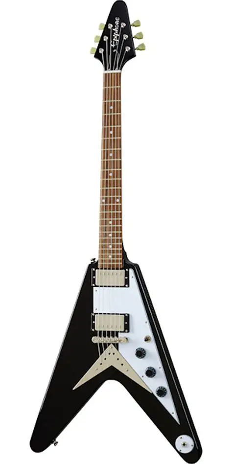
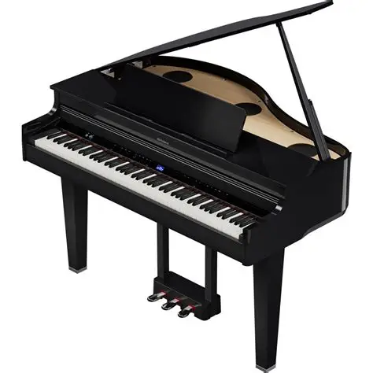

Про сайт
Сайт Musicageddon призначений для навчання музики, перегляду акордів, гам та створення власних музичних композицій.
Користувачі можуть вивчати теорію, слухати приклади та використовувати інтерактивні музичні інструменти.
Можливості сайту
- Вивчення акордів
- Навчання гамам
- Створення нот і табів
- Збереження власних композицій
Музичні інструменти

